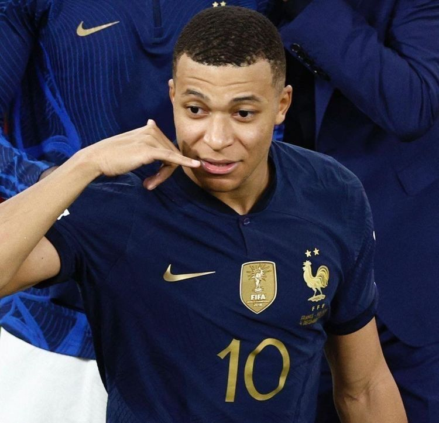

A la poursuite du Grand Line numérique.
Comme un navigateur sur Grand Line, je parcours le web à la recherche de nouvelles technologies pour construire le projet ultime.
Capitaine Développeur
Mon Odyssée Numérique
Depuis que j'ai découvert le monde du code, j'ai décidé de prendre la mer pour explorer les horizons infinis du développement web.
Actuellement en quête de nouvelles connaissance en BTS SIO Option SLAM, je me spécialise dans la création d'interfaces qui sont non seulement des outils, mais de véritables expériences.
HTML
CSS
JavaScript
React
Node.js
PHP
MySQL
Git

WANTED
BERRY 3,000,000,000
Journal de Bord (Mes Projets)
01
React • Node.js • Red Line API
a rajouter